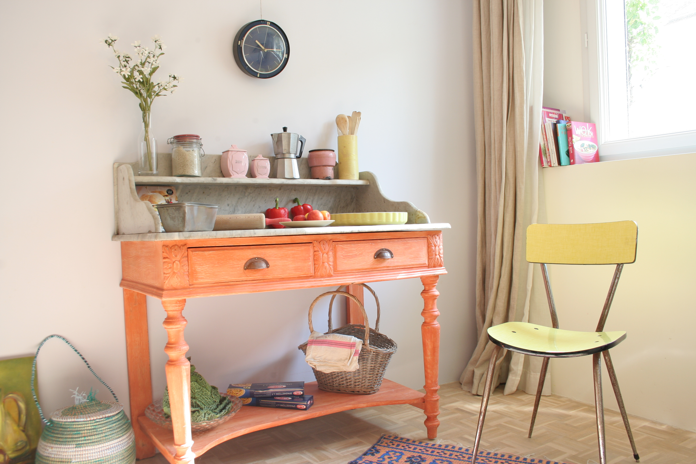
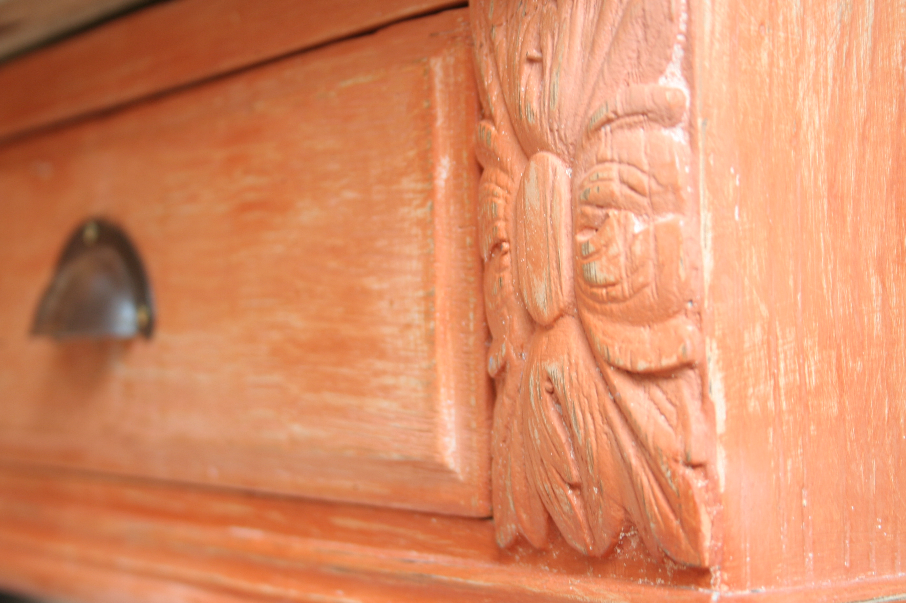
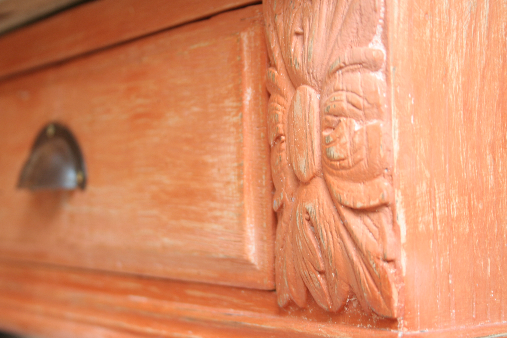
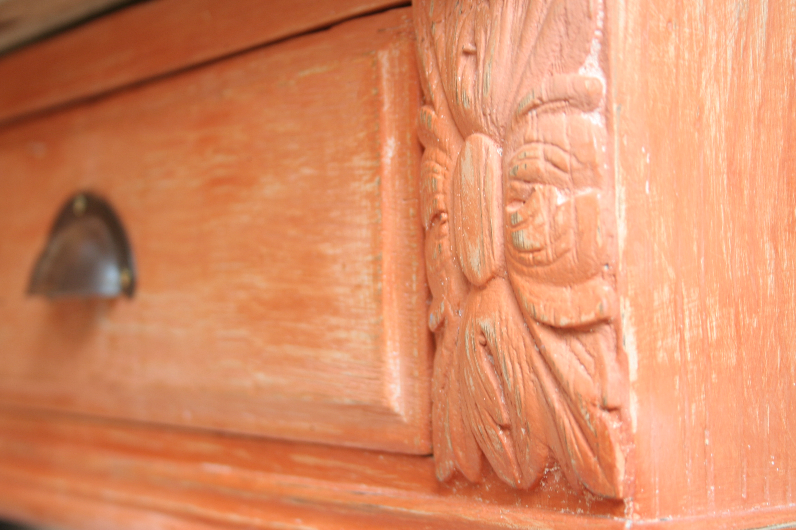
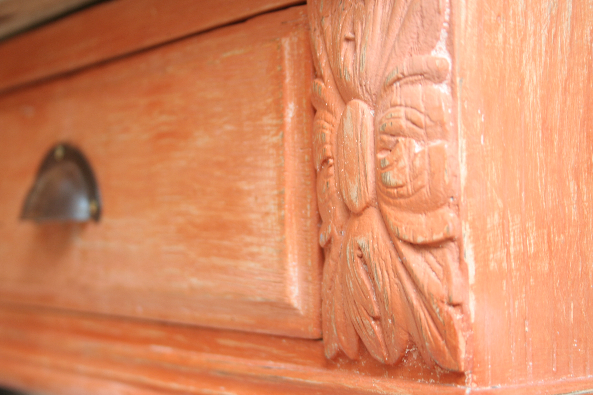

 



Patiner un meuble, ça n’est pas que l’application d’une simple peinture ! Une patine, c’est l’effet du temps qui passe, elle donne une âme, une profondeur, une émotion. Si vous souhaitez découvrir ses secrets d’atelier, venez suivre un cours de patine et partagez un moment convivial. Le stage se déroule sur 2 jours : - venez avec un meuble décapé et des photos de votre intérieur, - après un diagnostic de votre meuble et de votre intérieur, un choix de patines vous sera proposé, - à partir d’une gamme de peinture 100% naturelle, vous apprendrez les secrets d’une patine réussie, et réalisez vous-même votre projet - vous repartirez avec un meuble entièrement relooké près à redynamiser votre intérieur ! > Coût : 240 €/2jours matériel compris (Horaires : 9h-12h / 13h30-16h30) > Matériel : - Votre meuble doit être de petite taille pour qu’il puisse être achevé en 2 jours (chevet, chaise, table basse, portes de buffet…) - Les peintures et accessoires sont inclues dans la prestation. > Nombre de personne : 5 max. > Dates : > Lieux : prévoir des liens vers les lieux pour que les clients puissent visualiser l'endroit. > Pour s'inscrire : Contact (redirection vers contact) A l’occasion de : - Idée cadeau (enterrement de vie de jeune fille) - Activité de découverte entre amis - Stage de perfectionnement - Activités associatives - Comité d’entreprise (développement de la créativité et cohésion d’équipe) Témoignages :